Julia in studio
Studio fashion editorial, Los Angeles, August 2025

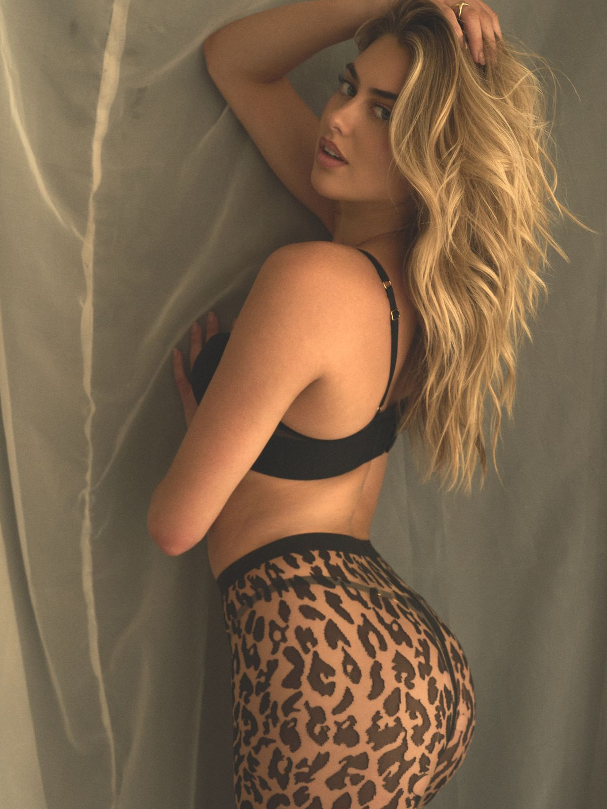
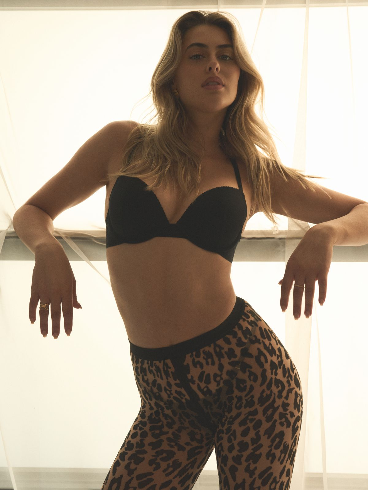
Midweek glow
Studio fashion editorial with model Julia, Los Angeles, August 2025. Julia and I are both from Dallas. We shot this one in LA.
Stylist Monica brought leopard print tights, heels, and Guess pieces. White walls, natural light through the garage doors, one clear wardrobe direction.
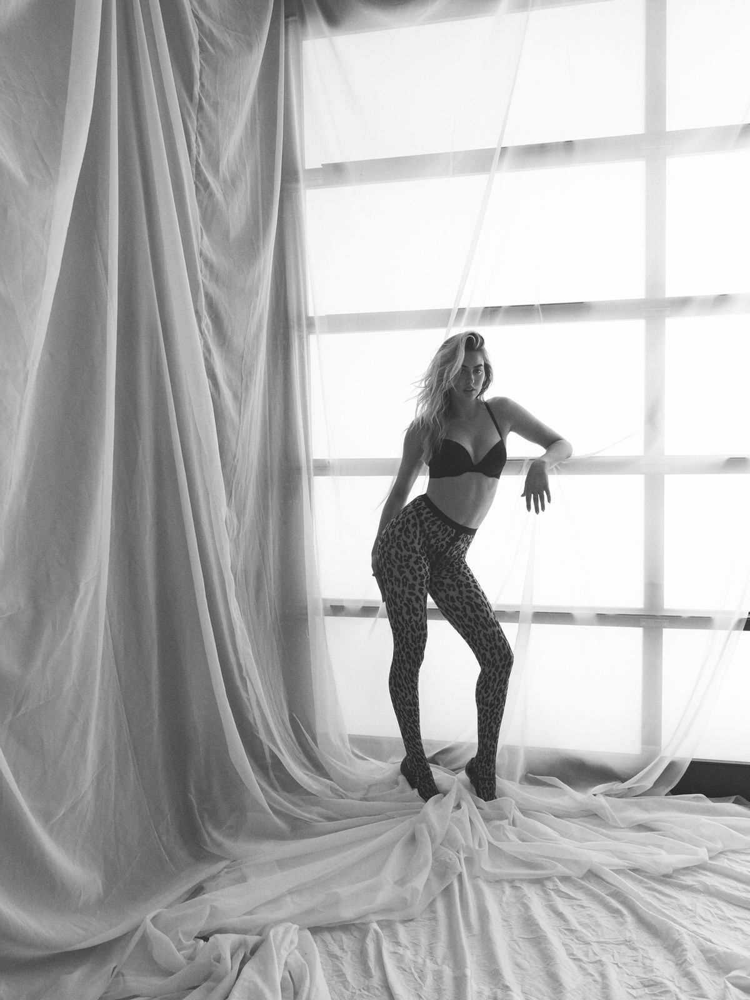
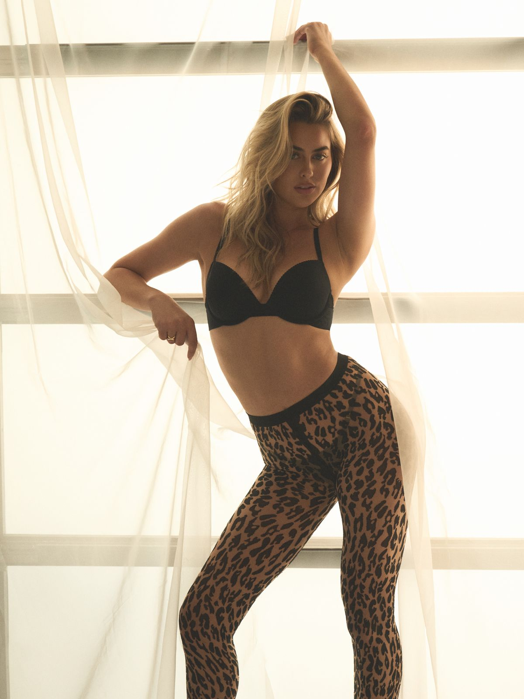
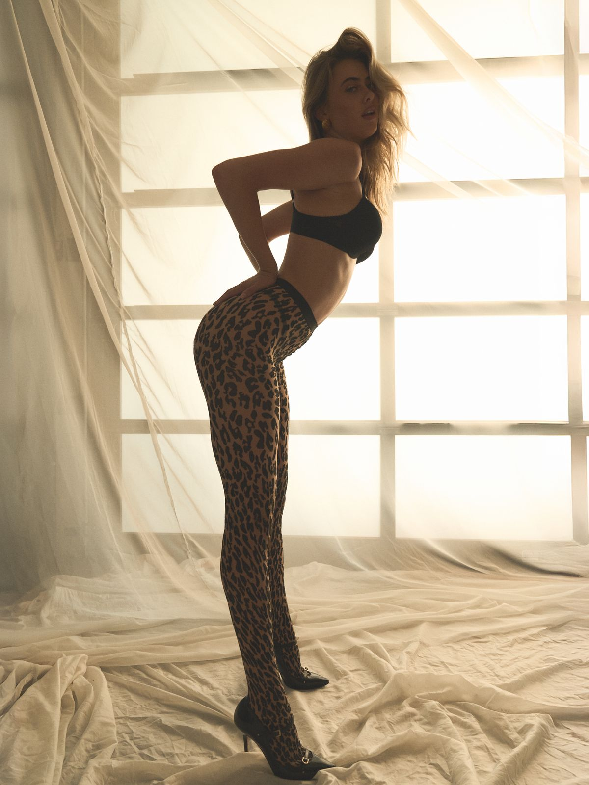
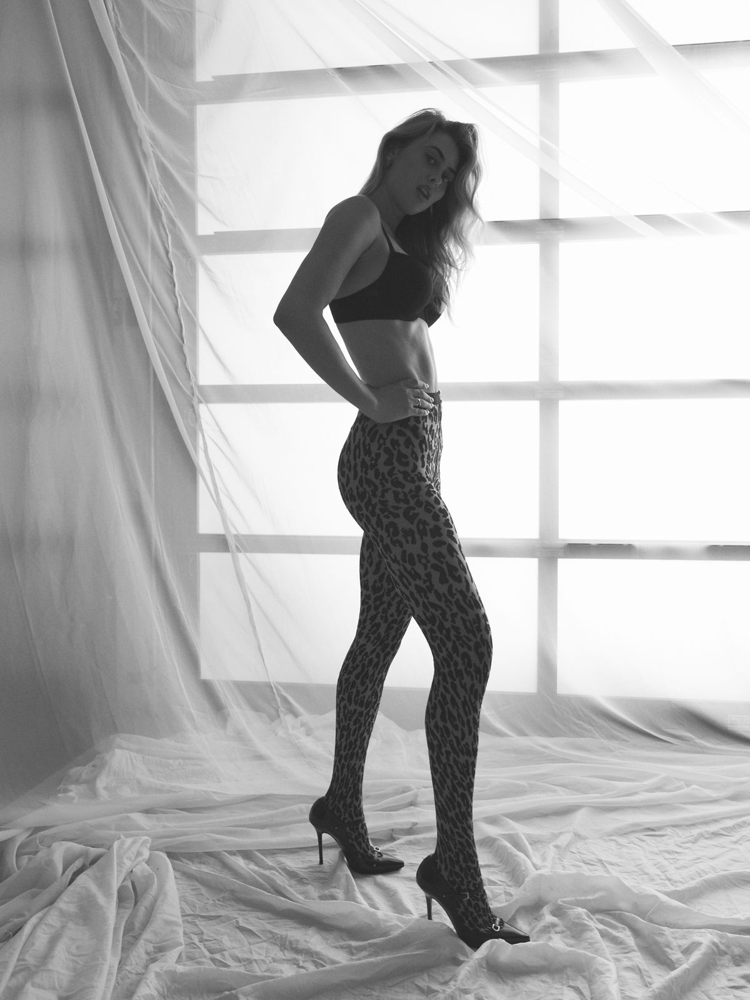
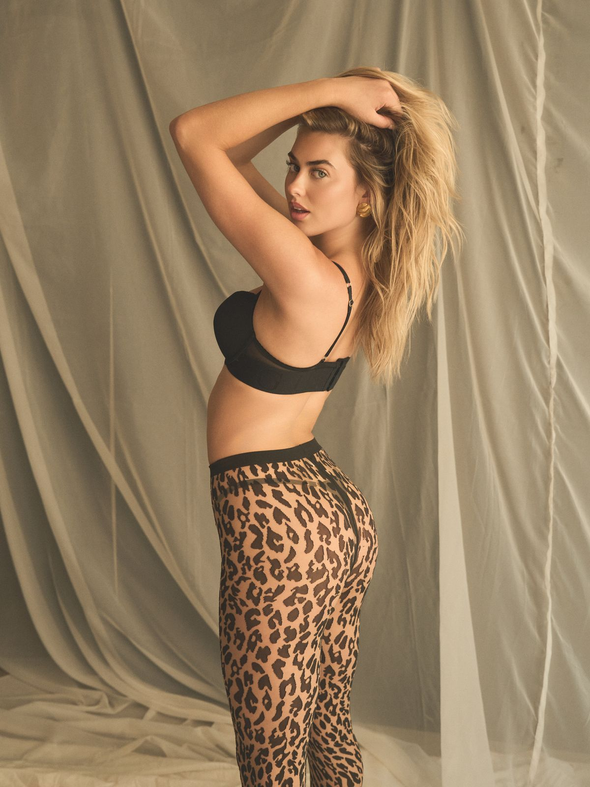
The garage doors provided the dominant light source: warm, diffuse, with enough glow to skip the front fill entirely. Negative fill on the opposite side pulled the shadows back.
Some of the strongest frames from this set are the close-ups. They isolate form rather than figure. The kind of image that holds on its own.
For editorial test sessions, see the model development page.
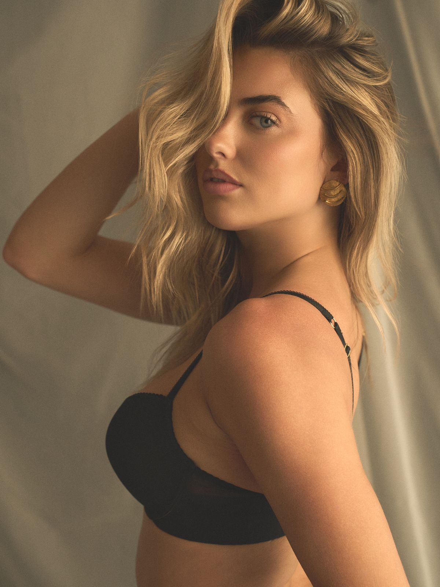
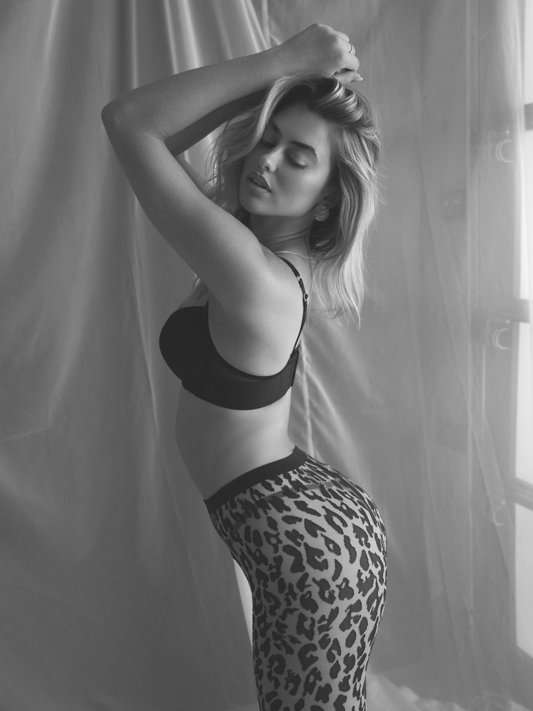
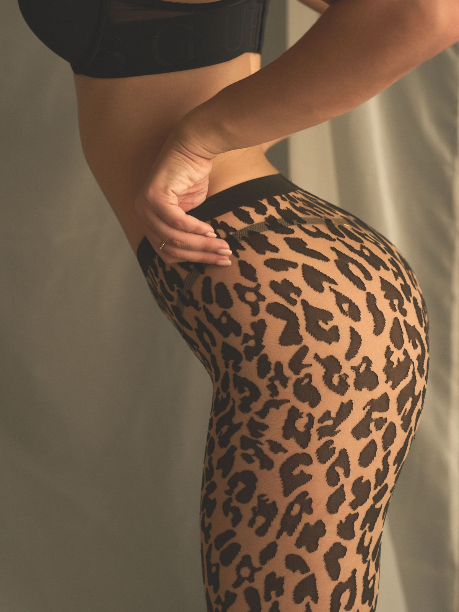
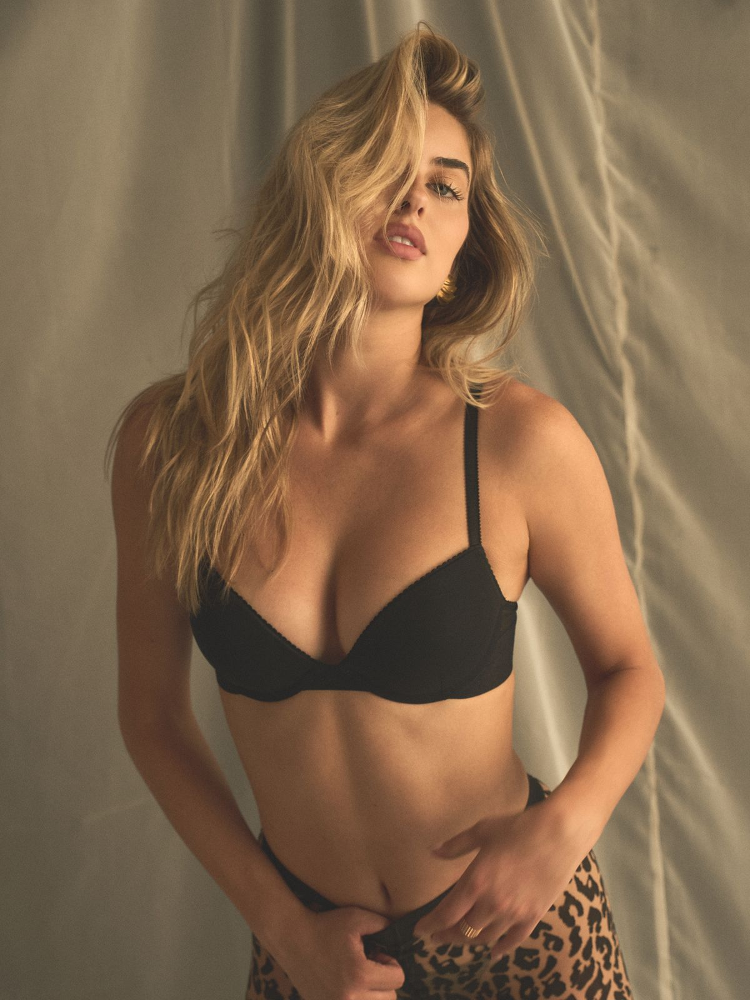
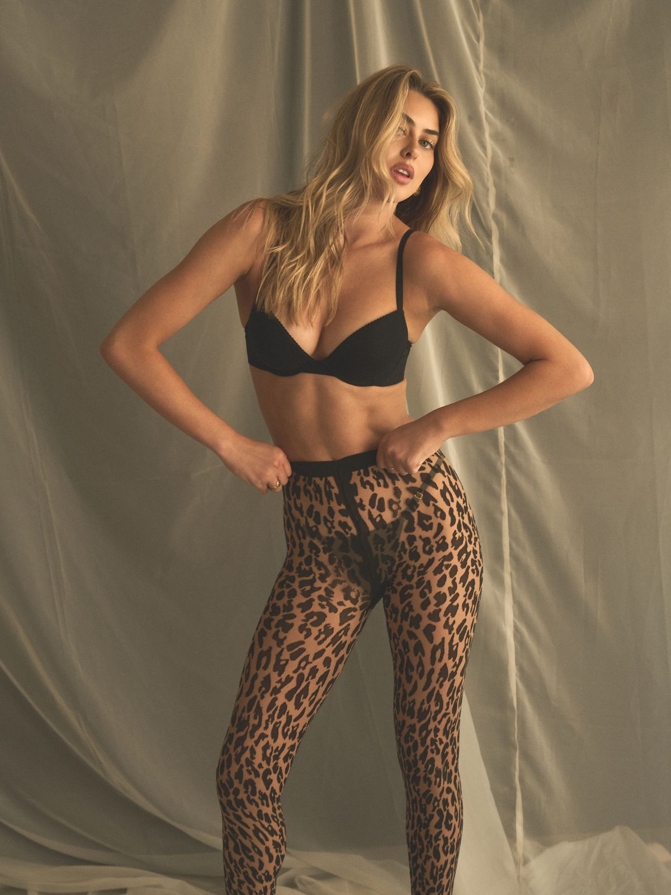
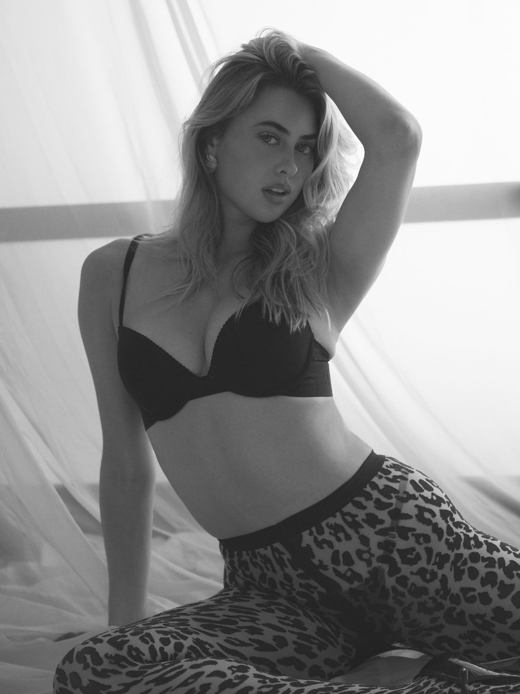
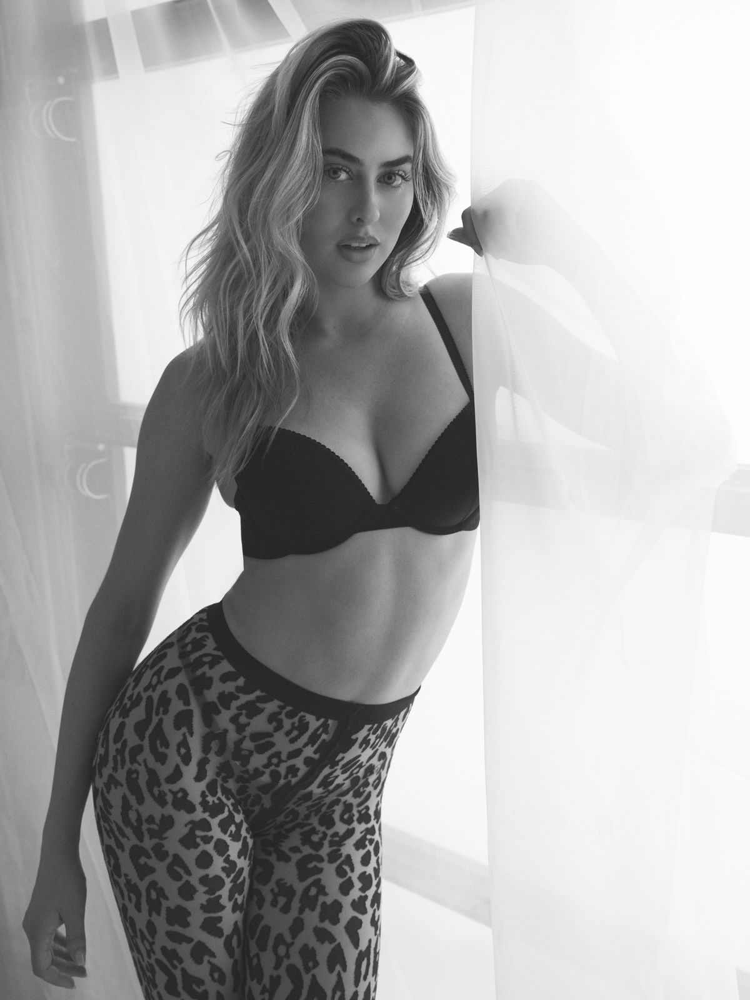